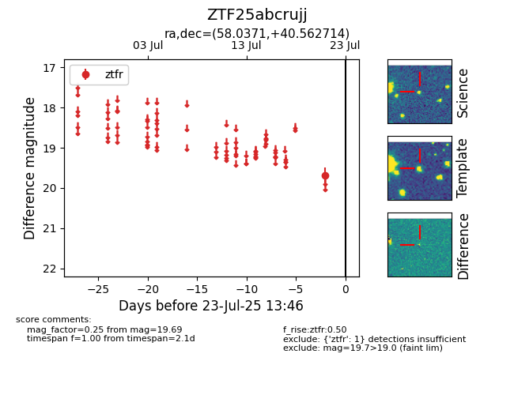

Target ZTF25abcrujj at 2025-07-23 13:46, see:
FINK: fink-portal.org/ZTF25abcrujj
Lasair: lasair-ztf.lsst.ac.uk/objects/ZTF25abcrujj
ALeRCE: alerce.online/object/ZTF25abcrujj
alt names
ZTF25abcrujj (ztf,fink)
coordinates:
equatorial (ra, dec) = (58.0371,+40.56271)
galactic (l, b) = (156.1484,-10.37484)
photometry
last ztfr=19.69
1 ztfr detections
